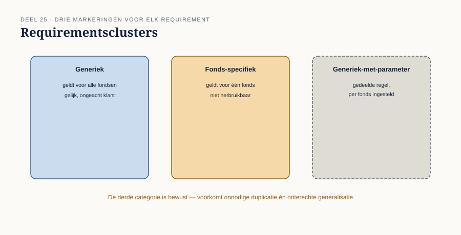
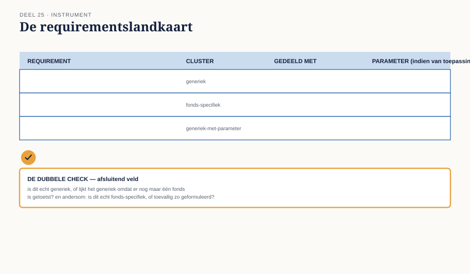

Deel 25 — Requirementsarchitectuur op programmaschaal
Slidedeck · Ductus-cursus Business-analyse · niveau 3 · deel 25 van 30 · 22 slides
Slide 1 — Titel
Business-analyse — deel 25 Requirementsarchitectuur op programmaschaal
Het zwaartepunt van het CBAP-examen — RADD, 30%
Slide 2 — Van één requirement naar een geheel
Traceerlijn (niveau 2): één requirement volgen.
Vandaag: hetzelfde denken, over zeven fondsen tegelijk.
Slide 3 — Zeven keer hetzelfde, op één punt na
"Zes van de zeven hebben identieke eisen. Fonds 5 heeft een extra eis vanwege een oude regeling."
"En Victors compensatieregeling?"
"Blijkt een generieke regel met één afwijkende parameter."
Slide 4 — Twee ontdekkingen, één gesprek
Verspild werk: zes keer apart uitgewerkt wat generiek was. Verborgen structuur: "uniek" bleek generiek-met-parameter.
Slide 5 — Waar we het over gaan hebben
- Van losse requirements naar samenhang
- Allocatie
- Ontwerpopties op architectuurniveau
- De requirementslandkaart
Slide 6 — Requirementsarchitectuur
Het geheel van requirements, geordend naar samenhang — zodat duidelijk is wat generiek is en wat specifiek.
Slide 7 — Drie soorten clusters
Generiek — geldt overal hetzelfde Fonds-specifiek — geldt alleen hier Generiek-met-parameter — dezelfde structuur, één variabele
Slide 8 — Het meest over het hoofd geziene type
Generiek-met-parameter.
Victors compensatieregeling: zelfde structuur, alleen het percentage verschilt.
Slide 9 —

Requirementsclusters, gemarkeerd naar hun aard
Slide 10 — Twee tegenovergestelde risico's
Onnodige duplicatie — zeven keer hetzelfde werk. Een gemiste uitzondering — een generieke regel die niet overal klopt.
Slide 11 — [Opdracht 1]
Classificeer de twee clusters uit Nours vergelijkingstabel.
Slide 12 — Sanders verspilde werk
"Ik heb voor fonds 5 een compleet eigen controle gebouwd. Ik wist niet dat er al iets generieks bestond."
Slide 13 — Hetzelfde probleem als Merel en Bram
Niveau 2, deel 12: geen gedeelde, gezaghebbende bron.
Nu: requirements in plaats van besluiten.
Slide 14 — [Opdracht 2]
Welk risico trof Sander — en wat had een landkaart voorkomen?
Slide 15 — Allocatie
Welk team, systeem, of discipline voert welk deel uit?
Niet triviaal bij zeven fondsen en meerdere deelprojecten.
Slide 16 — Generiek centraal, parameter lokaal
De kern bij één team. De fonds-specifieke variabele bij wie het fonds kent.
Slide 17 — [Opdracht 3]
Stel een allocatie voor het datakwaliteitscluster voor.
Slide 18 — Ontwerpopties op architectuurniveau
Eén generiek systeem met parameters? Zeven aparte implementaties? Iets ertussenin?
Dezelfde discipline als het optieblad — nu op hoger niveau.
Slide 19 — De werkvorm van dit deel
De requirementslandkaart
Cluster · Van toepassing op · Aard · Allocatie · Opties
Slide 20 — Het veld dat het verschil maakt
Welk requirement lijkt uniek maar is dat niet — en welk requirement lijkt generiek maar heeft toch een uitzondering nodig?
Slide 21 —

De requirementslandkaart — met de dubbele check als afsluitend veld
Slide 22 — Volgende keer
Samenhang staat. Nu: evaluatie onder toezicht.
Deel 26: oplossingsevaluatie onder toezicht — invaren, gegevenskwaliteit, en verdedigbaar stoppen.